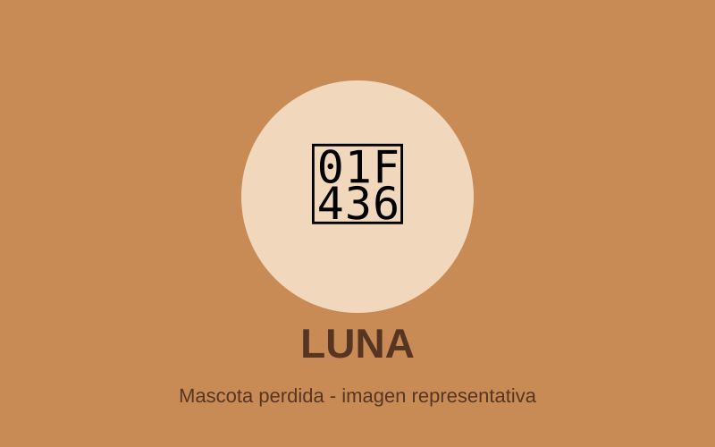
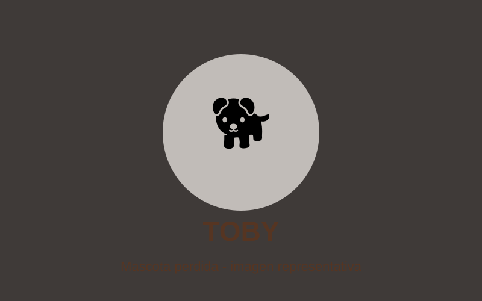
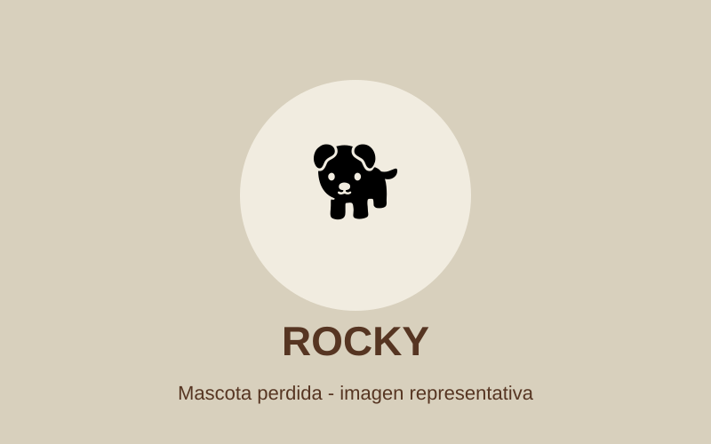
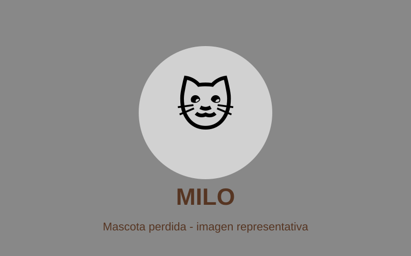
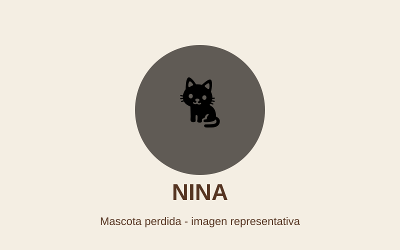
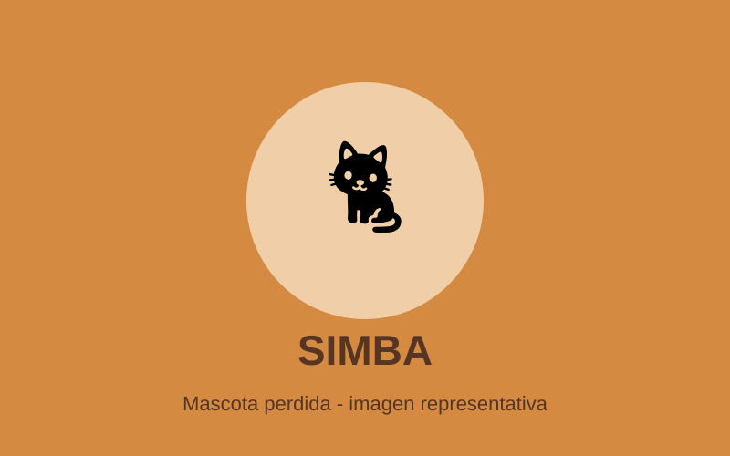

Perro
Luna
Descripción: Hembra, tamaño mediano, pelaje marrón claro y collar rojo.
Zona: Parque Saavedra.
Ver información completaAyudanos a encontrar a nuestros compañeros
En este sitio publicamos información de mascotas perdidas. Seleccioná una categoría para consultar los casos correspondientes.
Ver mascotasElegí una categoría. La navegación funciona únicamente con HTML y CSS, sin JavaScript.

Descripción: Hembra, tamaño mediano, pelaje marrón claro y collar rojo.
Zona: Parque Saavedra.
Ver información completa
Descripción: Macho, grande, pelaje negro con una mancha blanca en el pecho.
Zona: Barrio Norte.
Ver información completa
Descripción: Macho, pequeño, pelaje blanco y marrón, orejas caídas.
Zona: Plaza Moreno.
Ver información completa
Descripción: Macho, pelaje gris atigrado, ojos verdes y collar azul.
Zona: Centro.
Ver información completa
Descripción: Hembra, pequeña, pelaje blanco con manchas negras y ojos amarillos.
Zona: Barrio La Loma.
Ver información completa
Descripción: Macho, tamaño mediano, pelaje naranja atigrado y sin collar.
Zona: Villa Elvira.
Ver información completaCompletá el formulario con la mayor cantidad de información posible.
Email: contacto@mascotasperdidas.com
Teléfono: (0221) 555-1234
Este sitio es mantenido por un equipo de voluntarios que reúne, organiza y publica información sobre mascotas perdidas para facilitar el reencuentro con sus familias.
Actualización: la información se incorpora a medida que recibimos nuevos avisos.